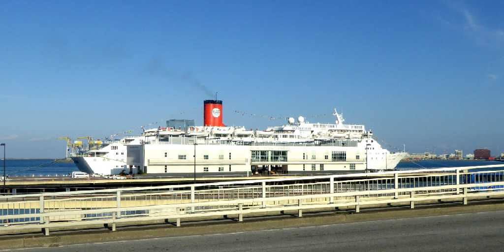
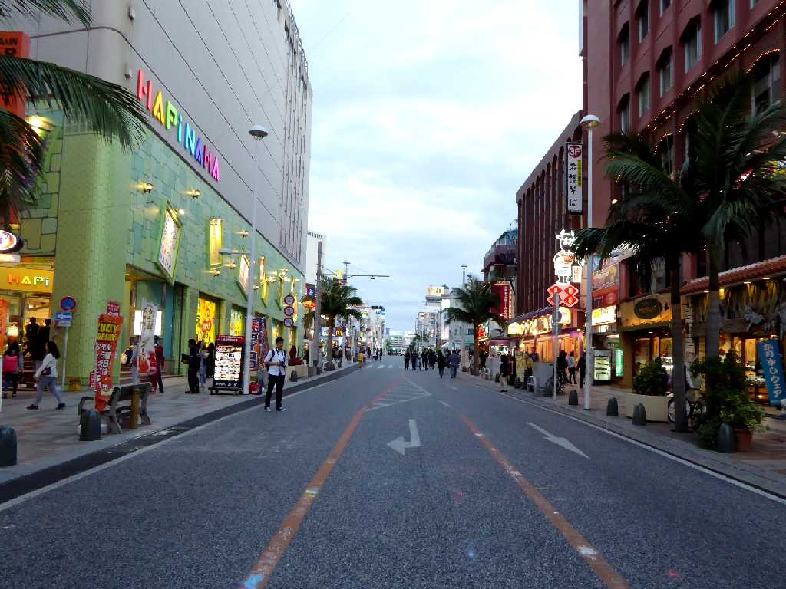
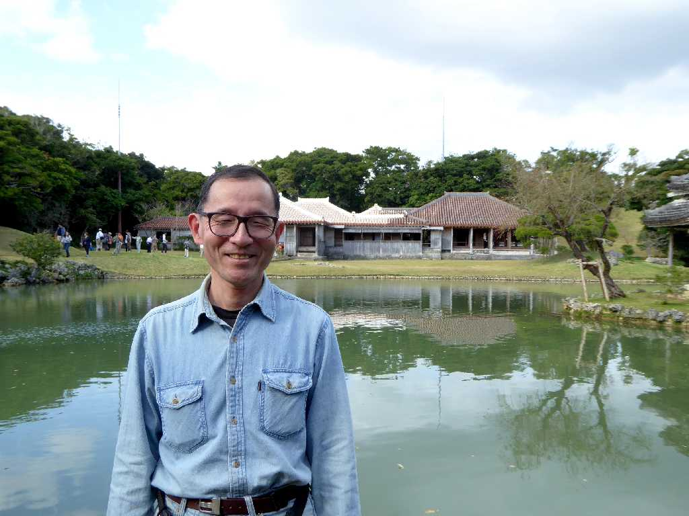

Ocean Dream Naha New Port Naha Okinawa
地球一周の船旅出港４日目１,６１７ｋｍ航行し那覇新港に着岸したオーシャンドリーム号

Kokusaiodori Naha
那覇市の中心街を通る国際通り
Shikinaen Naha
琉球王朝の別邸として１８世紀中頃に創られ迎賓館としても使われた識名園は宝石を散りばめた箱庭とも云われた

December 20 2015 Shikinaen